This project demonstrates practical Linux administration skills developed in a Kali Linux virtual machine. The focus was on file management, permissions, users and groups, networking, system logs, Nano, and process management.
This hands-on lab focused on practical Linux administration rather than theory, building skills used daily by Linux administrators and SOC analysts.
I built this lab to gain confidence using the Linux command line through practical exercises that mirror real-world administration tasks.
I practiced file management, grep, find, Nano, permissions, users and groups, networking, log analysis with dmesg and journalctl, and process management using ps.
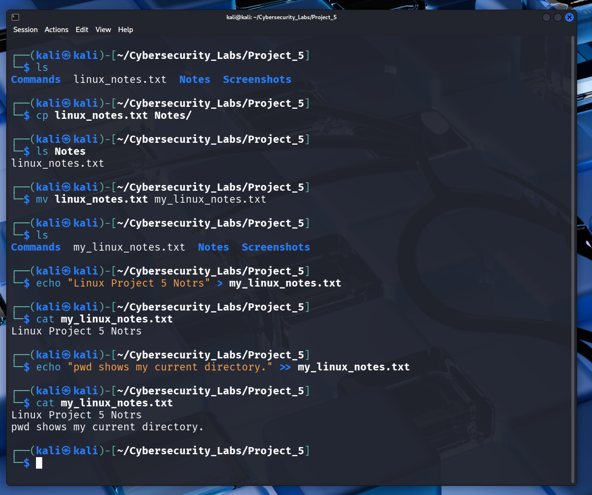
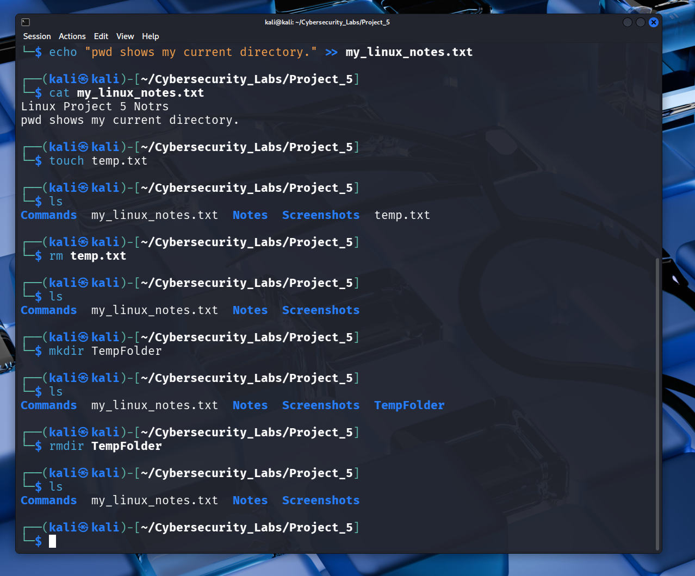
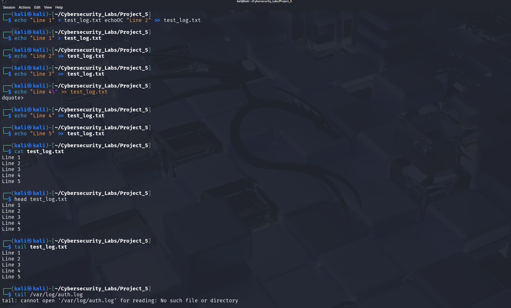
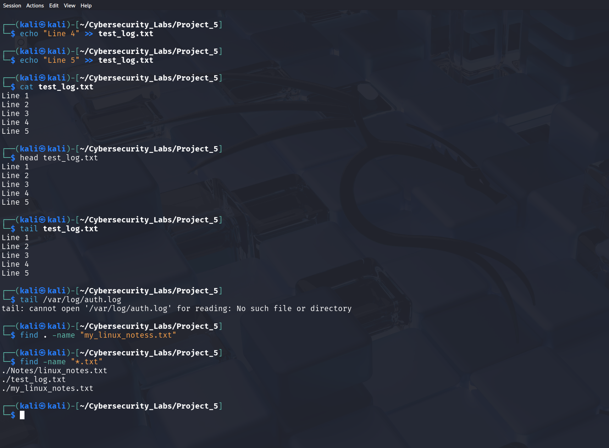
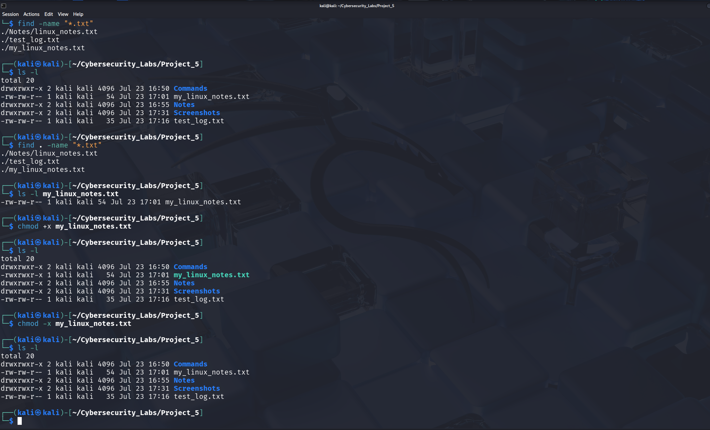
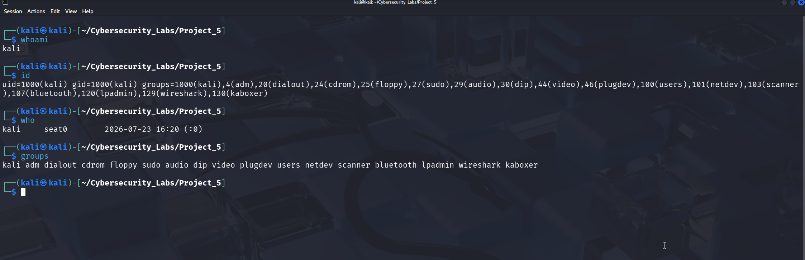
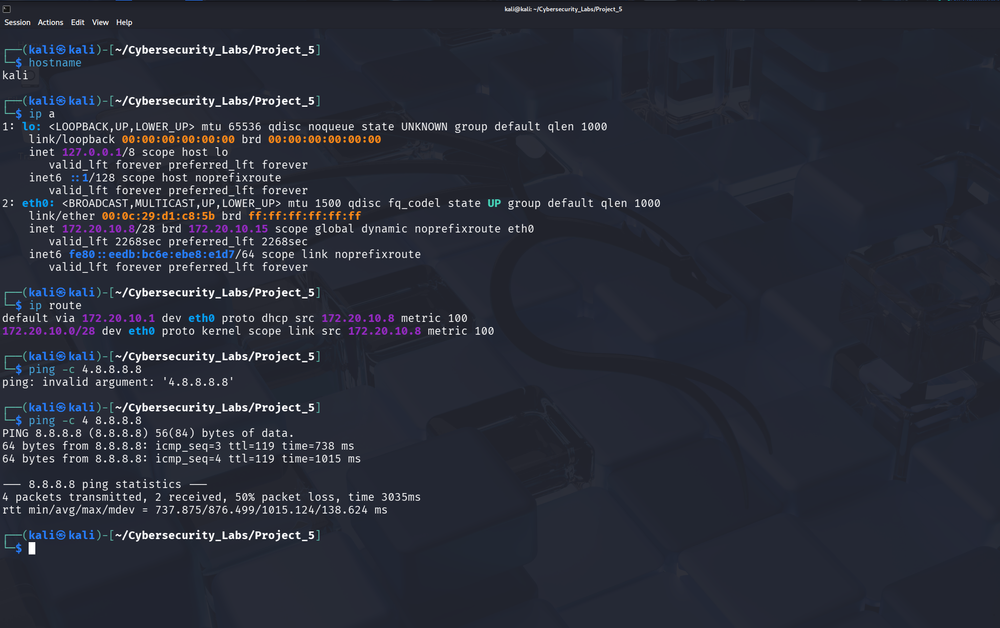
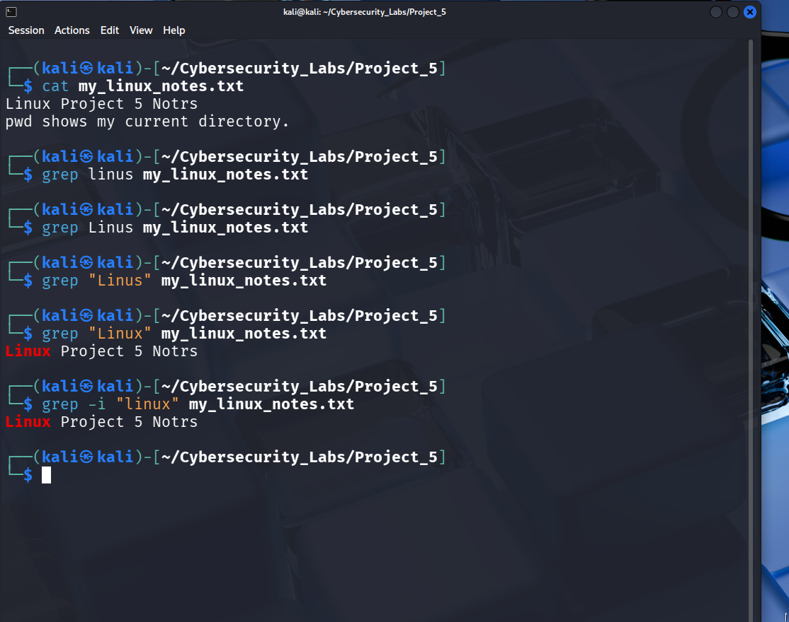
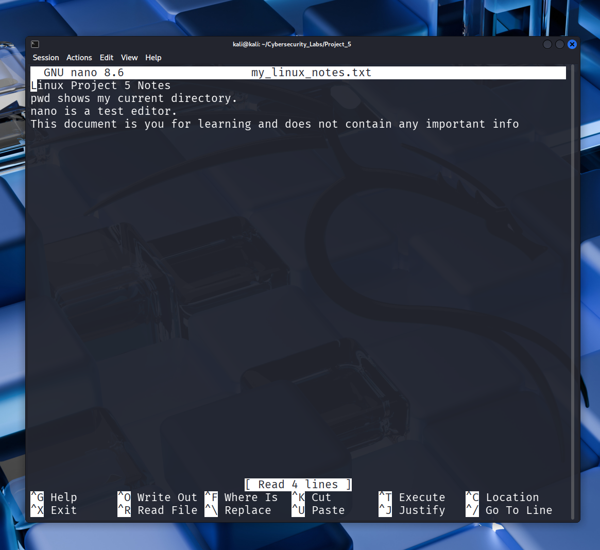
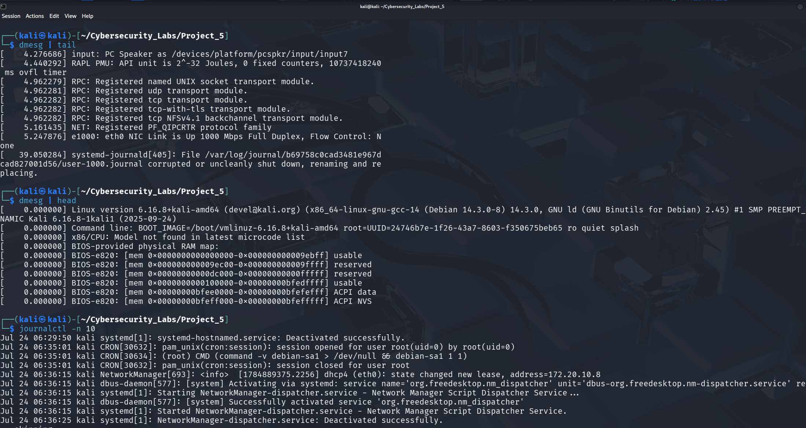
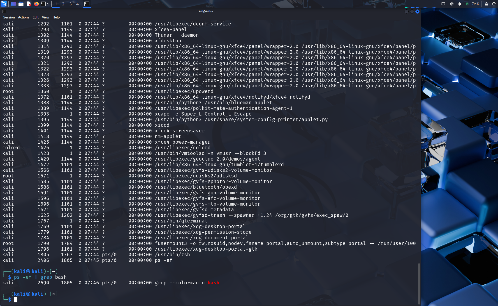
This project strengthened my Linux command-line administration skills and reinforced the importance of practical experience for a future Junior SOC Analyst role.